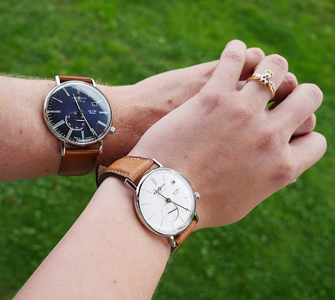

Minútky podľa @kniha_hodinky — Normy Jedál
Za každým příběhem je příběh. Za každým pohledem člověka je jeho soukromý vesmír myšlenek, přání, tužeb, křivd, strachu, odvahy a pravdy. Je to to nejdražší, co na světě máme, a přitom na to nejde nalepit cenovka. Jsme to my.
A protože jsme velcí milovníci příběhů, rozhodli jsme se ke každé objednané knížce posílat i malý bonus. Náš příběh za příběhem. V pěti dílech mini seriálu, kde upřímně a otevřeně popisujeme celou naši cestu od září 2017 až do ledna 2021. Naši klikatou a záplatovanou cestu za (s) knihou.
Jsou v něm zodpovězená všechna naše proč. Proč jsme se rozhodli vydat knihu samonákladem? Proč se vůbec Hodinky jmenují Hodinky? …
Otevíráme v nich dveře našich snů a s knedlíkem v krku, slzami v očích, rozklepanými koleny, ale ruku v ruce a s odhodláním o krapet větším si za nimi jdeme. A budeme velice šťastní, pokud půjdete s námi.
#knihahodinky #hodinky #pribehzapribehem #svatebnihodinky #ananasovyprstynek #jonesovi #laska #sen #kniznidite #knihomol #svatba #realita #reunion #cas #minutky #ceskyautor #slaskou #followyourdreams #happy